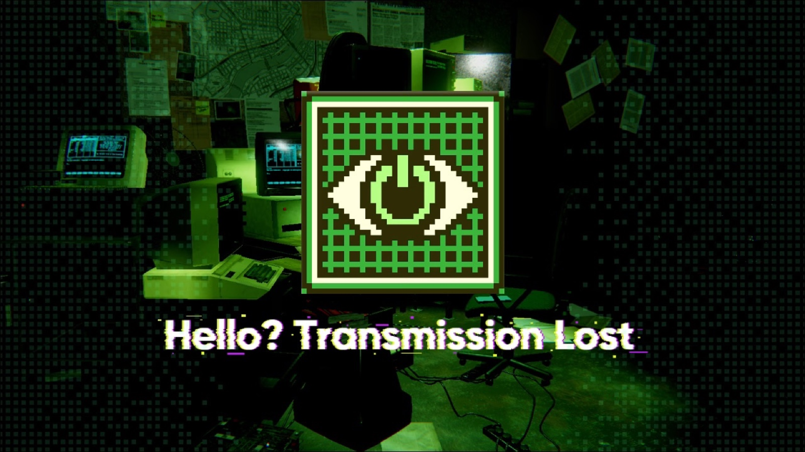

← All work


Hello? Transmission Lost
A narrative puzzle horror game about humanity, AI prediction and control — the final-year group project.

Overview
Set in 2030, engineer Adrian Vales discovers an abandoned underground system built to predict the future. Players sort surveillance footage, repair the broken network and avoid the anomalies as they uncover the truth.
The whole experience is wrapped in a CRT-terminal aesthetic — phosphor green on black, scanlines and glitch — with a free playable demo for PC.
Screens
Team & context
A final-year group project by team Looooop — Cheng Yu Tung (Janet), Xu Huicong, Zhou Yunxin, Huang Zijuan and Zhou Jingyi — supervised by Hossein Najafi and Rhys Jones. MSc Innovative Multimedia Entertainment, PolyU Design.